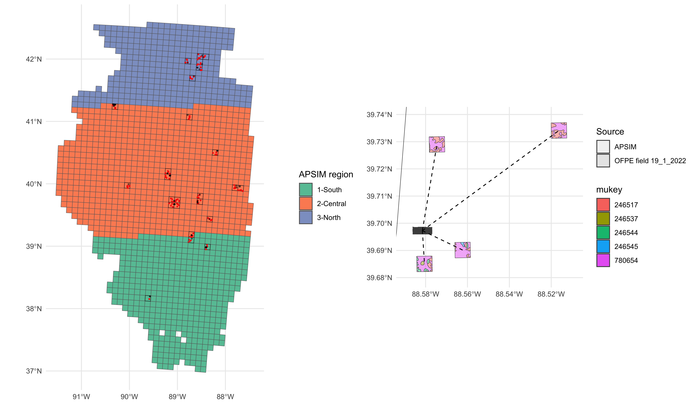

On-farm precision experiments (OFPE) generate high-resolution yield data under many nitrogen (N) rates on a small number of fields.
At first glance, this seems ideal for predicting yield–N relationships: fit a flexible machine-learning model (e.g., tree ensembles) and use it to choose the profit-maximizing N rate.
However, the earlier tree-ensemble work showed that:
Yield is driven by a high-dimensional interaction of N, soils, weather, and management.
Even sophisticated ensemble models trained on cleaned OFPE data do not deliver stable, field-specific forecasts at unseen locations or years.
With only one or two OFPE years per field, trying to “forecast everything” from those data is not realistic.
So the goal of this chapter is not to build the best forecasting model.
Instead, the goal is to give farmers a disciplined way to combine what they already know (priors) with what they learn from OFPE (data) so that their N decisions become more reasonable and more profitable as experience accumulates over years.
In other words, the focus shifts from:
“Can one or two years of OFPE make me rich right now?”
to
“Given APSIM simulations, county yield history, and my noisy OFPE field trials, what is a coherent, transparent way to update my beliefs about the yield–N curve on this field?”
Information layers: APSIM grid and OFPE fields
The figure below summarizes the information structure for data:
p_combined

Figure 1. Information structure of APSIM and OFPE data at Illinois
Left panel: APSIM simulation grid, aggregated into three agronomic regions (South, Central, North). Each cell has a 30-year simulated yield–N distribution.
Red polygons/points: locations of OFPE fields overlaying the APSIM grid.
Right panel: zoom on one APSIM cell and a single OFPE field (e.g., Farm 19, Field 1, 2022), showing how the field sits inside a cell with heterogeneous soils (different mukey values).
This map captures the basic logic of the Bayesian chapter:
APSIM region–cell priors
For each APSIM cell and N rate, we have a prior distribution of yield (mean, variance, skewness) based on long-run weather and soils.
Field-specific OFPE data
On a subset of cells we observe OFPE data: noisy yield outcomes at a finite set of N rates in one or two years.
Bayesian updating at the field–N level
At each N rate, we update the APSIM prior moments with the OFPE sample moments to obtain a posterior yield–N distribution for that field and year.
The rest of the chapter formalizes this updating and studies how much the OFPE data actually move the prior, and how that matters for N decisions.
What this chapter claims (and what it does not)
1. OFPE alone is not a credible decision supporter
Even with careful cleaning and clustering, single-field OFPE data are:
Noisy: high within-N variance due to micro-topography, measurement error, and unobserved shocks.
Sparse in time: one or two years rarely span the full range of weather states.
High-dimensional: soils, topography, and management interact with N in ways that tree models can fit in-sample but cannot reliably extrapolate.
Therefore, OFPE by itself is not sufficient to deliver stable, field-specific profit-maximizing N recommendations.
2. APSIM and county yield history are useful—but incomplete—priors
Long-run APSIM simulations and county yield histories:
Capture systematic spatial patterns (North vs Central vs South) and climate-driven trends.
Provide smooth, concave yield–N curves at the cell or county scale.
But they do not know the farmer’s specific field:
Local management, drainage, and micro-soils can shift the whole yield–N curve up or down.
APSIM calibration and county averages can misrepresent the level and curvature of the true field-level response.
So these sources are good priors—they encode agronomic knowledge and regional history—but they do not by themselves produce field-optimal N rates.
3. The contribution of this Bayesian chapter
The contribution is not to show that “one or two years of OFPE make farmers dramatically richer.”
Instead, the contribution is to build a coherent Bayesian framework that:
Treats APSIM simulations and county history as prior information about the yield–N distribution for each cell and region.
Treats OFPE cluster means and variances as noisy “likelihood” information about the field-specific yield–N curve.
Updates prior moments (mean and variance, and optionally skewness) into posterior yield–N distributions at each N rate.
Uses these posterior distributions to derive field-specific N recommendations and to evaluate:
How far OFPE moves the prior (in μ₁, μ₂, and implied optimal N).
How much expected profit changes relative to prior-only or data-only decisions.
The key message is:
OFPE is most valuable when interpreted as additional evidence that shifts a prior, not as a standalone forecasting engine.
This chapter shows how to do that update in a way that is transparent, statistically coherent, and scalable as more OFPE seasons accumulate.
Roadmap of the Bayesian section
The rest of the Bayesian part of the book is organized as follows:
** Bayesian_Framework **
Formalize the farmer’s nitrogen–choice problem under uncertainty.
Introduce prior, likelihood, and posterior yield–N distributions.
Define profit and regret measures for comparing decision rules.
** Bayesian_Method **
Construct OFPE and APSIM yield–N moment tables.
Define the Bayesian moment update and maximum-entropy posterior construction.
Describe how optimal nitrogen rates are derived from prior, data-only, and posterior distributions.
** Bayesian_Results **
Show how OFPE updates APSIM priors at the field level (posterior μ₁, μ₂, and optimal N).
Compare profits and N use under different decision rules on repeated fields.
Discuss where OFPE has meaningful influence and where noise dominates.
Together, these chapters reposition OFPE from a fragile forecasting tool to a Bayesian learning device that helps farmers use limited trial data to gradually refine field-specific N decisions over time.
Source Code
---title: "Overview(Bayesian) "author: "Jaeseok Hwang"format: html: toc: true code-fold: falseexecute: echo: false warning: false message: false---```{r setup, include=FALSE}knitr::opts_chunk$set( message = FALSE, warning = FALSE, fig.align = "center", fig.width = 7, fig.height = 5, dpi = 300)library(here)library(dplyr)library(ggplot2)library(patchwork)book_figure_bayes2_dir <- here("book","Results","Figures","stage2_bayes")# overview panel built in 3a.data_ofpe_for_apsim.Rmdp_combined <- readRDS( file.path(book_figure_bayes2_dir, "apsim_ofpe_panel.rds"))```## Background {-}On-farm precision experiments (OFPE) generate high-resolution yield data under many nitrogen (N) rates on a small number of fields. At first glance, this seems ideal for **predicting** yield–N relationships: fit a flexible machine-learning model (e.g., tree ensembles) and use it to choose the profit-maximizing N rate.However, the earlier tree-ensemble work showed that:- Yield is driven by a **high-dimensional interaction** of N, soils, weather, and management.- Even sophisticated ensemble models trained on cleaned OFPE data **do not deliver stable, field-specific forecasts** at unseen locations or years.- With only one or two OFPE years per field, trying to “forecast everything” from those data is not realistic.So the goal of this chapter is **not** to build the best forecasting model. Instead, the goal is to give farmers a **disciplined way to combine what they already know (priors) with what they learn from OFPE (data)** so that their N decisions become more reasonable and more profitable **as experience accumulates over years**.In other words, the focus shifts from:> *“Can one or two years of OFPE make me rich right now?”*to> *“Given APSIM simulations, county yield history, and my noisy OFPE field trials, what is a **coherent, transparent way** to update my beliefs about the yield–N curve on this field?”*## Information layers: APSIM grid and OFPE fields {-}The figure below summarizes the information structure for data:```{r fig1, echo=TRUE, cache=TRUE, fig.width=12, fig.height=7, fig.cap="Figure 1. Information structure of APSIM and OFPE data at Illinois "}p_combined```- **Left panel:** APSIM simulation grid, aggregated into three agronomic regions (South, Central, North). Each cell has a 30-year simulated yield–N distribution.- **Red polygons/points:** locations of OFPE fields overlaying the APSIM grid.- **Right panel:** zoom on one APSIM cell and a single OFPE field (e.g., Farm 19, Field 1, 2022), showing how the field sits inside a cell with heterogeneous soils (different *mukey* values).This map captures the basic logic of the Bayesian chapter:1. **APSIM region–cell priors** For each APSIM cell and N rate, we have a prior distribution of yield (mean, variance, skewness) based on long-run weather and soils.2. **Field-specific OFPE data** On a subset of cells we observe OFPE data: noisy yield outcomes at a finite set of N rates in one or two years.3. **Bayesian updating at the field–N level** At each N rate, we update the APSIM prior moments with the OFPE sample moments to obtain a **posterior yield–N distribution for that field and year**.The rest of the chapter formalizes this updating and studies how much the OFPE data actually move the prior, and how that matters for N decisions.## What this chapter claims (and what it does not) {-}### 1. OFPE alone is not a credible decision supporter {-}Even with careful cleaning and clustering, single-field OFPE data are:- **Noisy**: high within-N variance due to micro-topography, measurement error, and unobserved shocks.- **Sparse in time**: one or two years rarely span the full range of weather states.- **High-dimensional**: soils, topography, and management interact with N in ways that tree models can fit in-sample but cannot reliably extrapolate.Therefore, **OFPE by itself is not sufficient** to deliver stable, field-specific profit-maximizing N recommendations.### 2. APSIM and county yield history are useful—but incomplete—priors {-}Long-run APSIM simulations and county yield histories:- Capture **systematic spatial patterns** (North vs Central vs South) and **climate-driven trends**.- Provide smooth, concave yield–N curves at the **cell or county scale**.But they **do not know the farmer’s specific field**:- Local management, drainage, and micro-soils can shift the whole yield–N curve up or down.- APSIM calibration and county averages can misrepresent the **level and curvature** of the true field-level response.So these sources are **good priors**—they encode agronomic knowledge and regional history—but they **do not by themselves produce field-optimal N rates**.### 3. The contribution of this Bayesian chapter {-}The contribution is **not** to show that “one or two years of OFPE make farmers dramatically richer.” Instead, the contribution is to build a **coherent Bayesian framework** that:1. Treats APSIM simulations and county history as **prior information** about the yield–N distribution for each cell and region.2. Treats OFPE cluster means and variances as **noisy “likelihood” information** about the field-specific yield–N curve.3. Updates prior moments (mean and variance, and optionally skewness) into **posterior yield–N distributions** at each N rate.4. Uses these posterior distributions to derive **field-specific N recommendations** and to evaluate: - How far OFPE moves the prior (in μ₁, μ₂, and implied optimal N). - How much expected profit changes relative to **prior-only** or **data-only** decisions.The key message is:> OFPE is most valuable when interpreted as **additional evidence that shifts a prior**, not as a standalone forecasting engine.> This chapter shows how to do that update in a way that is transparent, statistically coherent, and scalable as more OFPE seasons accumulate.## Roadmap of the Bayesian section {-}The rest of the Bayesian part of the book is organized as follows:### ** Bayesian_Framework ** {-}- Formalize the farmer’s nitrogen–choice problem under uncertainty. - Introduce prior, likelihood, and posterior yield–N distributions. - Define profit and regret measures for comparing decision rules.### ** Bayesian_Method ** {-}- Construct OFPE and APSIM yield–N moment tables. - Define the Bayesian moment update and maximum-entropy posterior construction. - Describe how optimal nitrogen rates are derived from prior, data-only, and posterior distributions.### ** Bayesian_Results ** {-}- Show how OFPE updates APSIM priors at the field level (posterior μ₁, μ₂, and optimal N). - Compare profits and N use under different decision rules on repeated fields. - Discuss where OFPE has meaningful influence and where noise dominates.Together, these chapters reposition OFPE from a fragile forecasting tool to a **Bayesian learning device** that helps farmers use limited trial data to gradually refine field-specific N decisions over time.